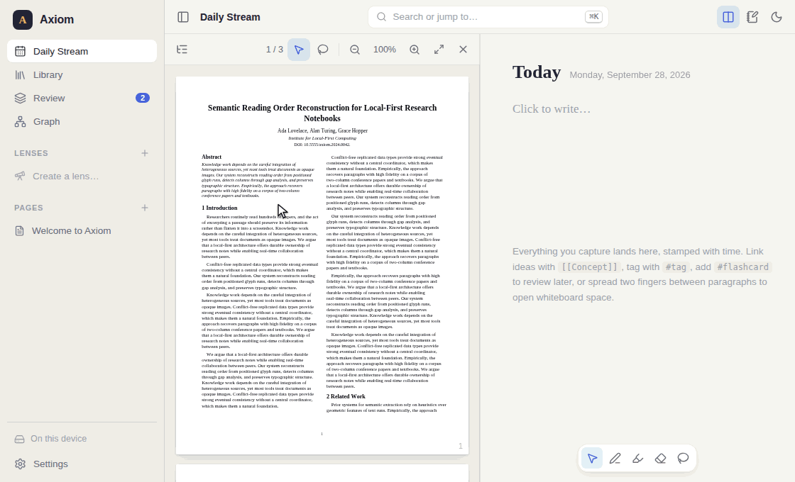
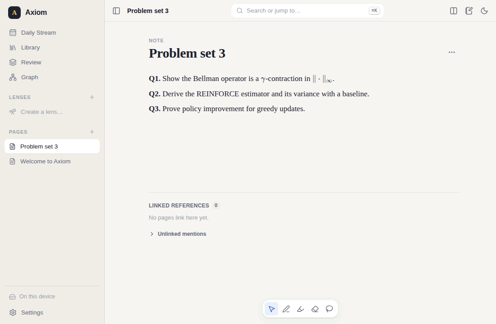
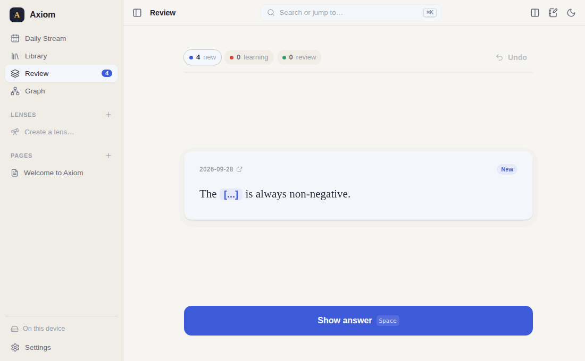
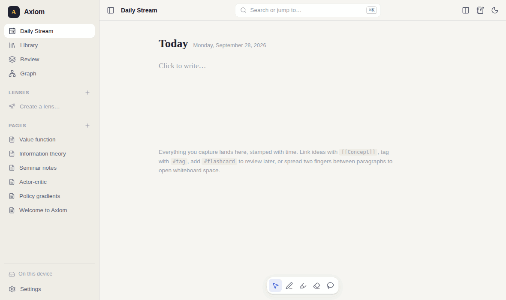
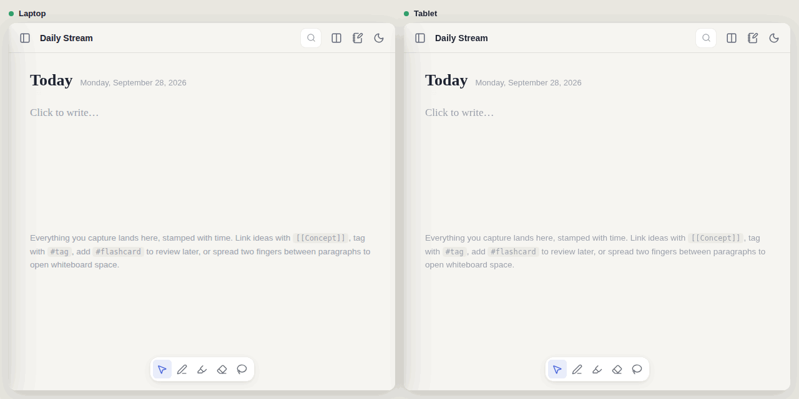

Install
Axiom is a Progressive Web App: one codebase that runs in the browser and installs like a native app on macOS, Windows, Linux, iPad and Android. You need Node.js 20 or newer to build it.
Run it on your computer
# get the code and its dependencies git clone https://github.com/preetsingh-007/axiom.git cd axiom npm install # start it, then open http://localhost:5173 npm run dev
Host your own copy
The production build is a folder of static files. Put it on any static host: GitHub Pages, Netlify, Cloudflare Pages, or a home server.
npm run build # writes dist/ npm run preview # try the build at http://localhost:4173
Install it as an app
- Chrome or Edge: the install icon in the address bar, or menu → Install Axiom.
- Safari on iPad or iPhone: Share → Add to Home Screen.
- Android: menu → Install app.
After the first load everything works offline, including opening PDFs you have already imported.
Optional: a sync relay
To sync live between devices, run the small relay server anywhere your devices can reach. It forwards encrypted messages and stores nothing.
npm run relay # listens on port 8787 node server/relay.mjs --port 8787 --quiet # same, with options
Put it behind HTTPS (so devices use wss://), for example on a free Fly.io or Render instance, or through a Cloudflare tunnel. server/README.md has the details.
Quick start
The first time you open Axiom it creates a short Welcome page you can edit or delete. Then:
- Write in today's page. The Daily Stream opens on Today. Click below the date and type. Press Enter for a new block.
- Link an idea. Type
[[and a name, for example[[Reinforcement Learning]]. The link creates a concept page that collects everything pointing at it. - Import a paper. Drag a PDF, EPUB or PPTX anywhere onto the window, or open Library → Import. Axiom reads the title, authors, table of contents and DOI, and gives it a BibTeX key such as
lovelace2024semantic. - Open it side by side. Click the paper. It opens on the left and your Desk stays on the right.
- Lasso something into your notes. Turn on the lasso tool (or hold Alt and drag, or just use a stylus), circle a paragraph, and press Send to Desk.
- Mark it for review. Add
#flashcardto any block. It appears under Review with cloze cards made for you.
Writing on the Desk
Everything you write is a list of blocks: paragraphs, equations, code, images, whiteboards and embedded pages. Click a block to edit it; click away or press Esc to see it rendered.
What you can type
| Type | You get |
|---|---|
$E = mc^2$ | Inline math, rendered with KaTeX |
$$ in an empty block, or /math | A display equation with a live preview |
[[Page]] or [[Page|label]] | A link; the page is created if it doesn't exist |
#tag or #[[two words]] | A tag, which is also a concept page |
![[Page]] | The whole page shown inline, live and editable |
{{c1::answer}} | An explicit cloze deletion for flashcards |
/ at the start of a block | Commands: math, whiteboard, code, image, embed, flashcard, today's date |
| Markdown | Headings, lists, bold, italics, quotes, tables, links |
Moving blocks around
Hover a block and use the handle on its left to drag it, or click the handle for a menu: turn into text, equation or code; copy as Markdown or LaTeX; make a flashcard; duplicate; delete. Deleting shows an Undo button, and Ctrl/⌘+Z outside the editor undoes block changes too.
The Side-Quest panel
Press Ctrl+. to open a scratchpad on the right. Look up a concept there without leaving what you were reading. Shift-click any link to open it in that panel.
Export
Drag a block out of Axiom into Overleaf, VS Code or a Markdown editor: text arrives as Markdown, equations as LaTeX, whiteboards as SVG. The page menu (…) exports the whole page as .md or .tex.
The Library
The Library keeps your sources untouched: PDFs, EPUB books and PowerPoint decks. It remembers where you stopped reading, your zoom level and your highlights, on every device.
- Large books open quickly because only the pages near your scroll position are rendered. A 300-page test textbook keeps fewer than 16 pages in memory.
- Table of contents appears as a tree on the left of the reader. Click an entry to jump to it.
- Highlights: select text and pick a colour. The same menu sends the quote to your Desk or looks it up in the Side-Quest panel.
- Slide decks are shown as one vertical stream. Seminar notebook turns a deck into a Desk page with whiteboard space under every slide, ready for a talk.
- Suggested tags appear in light grey on each source, based on concepts you already use. Tap one to keep it, or × to dismiss it.
Lasso & Drop
Circle any region of a source. Axiom works out what you selected and shows a preview card:
- Text becomes Markdown. Two-column papers are read in the right order, hyphenated line breaks are joined, and headings and lists are kept.
- Equations become LaTeX. With a vision-capable AI provider set up, Axiom reads the image for an exact transcription.
- Figures become images, cropped at high resolution.
Switch between Text, LaTeX and Image on the card, then press Send to Desk or drag the card to the exact spot you want.
Every extracted block carries a gold anchor. Click it and the reader jumps back to that page and flashes the region you took it from.

Whiteboard & Beautify
Make room to think
On a touch screen, put two fingers between two paragraphs and spread them apart. Whiteboard space opens under your fingers. Pinch an empty whiteboard to close it again. On a laptop, pinch on the trackpad, or hover between blocks and click the small +.
Draw
Pick a tool from the floating toolbar or press P pen, H highlighter, E eraser, L lasso, V pointer. With a stylus, Axiom switches to the pen automatically and ignores your palm.
Beautify
Lasso messy ink and double-tap inside the selection. Circles, boxes, lines and arrows snap into clean, aligned shapes. Handwriting turns into text, and written maths into LaTeX, when an AI provider is set up. Tap the result to switch back to your original ink at any time.

Flashcards
Add #flashcard to any block on your Desk. Axiom writes cloze cards from it: bold terms, links, inline maths and definitions become blanks. Write {{c1::…}} yourself when you want exact control.
Open Review, press Space to show the answer, then rate it with 1 Again, 2 Hard, 3 Good or 4 Easy. The buttons show when the card will come back. Scheduling uses FSRS and syncs with your notes.
If you keep failing a card, Axiom flags it and offers a button to reopen the source passage it came from.
New cards per day, target retention and the failure threshold are under Settings → Spaced repetition.

Graph, search & Lenses
Ctrl/⌘+K searches every page, block and source, and runs commands. The Graph view shows how pages and concepts connect; click a node to open it.
A Lens is a saved search whose results are live, editable blocks gathered from across your notes. Examples:
| Query | Shows |
|---|---|
[[Reinforcement Learning]] OR source:"Sutton" | Blocks about a topic plus everything taken from one book |
is:flashcard type:math | Equations you are memorising |
has:anchor after:2026-09-01 | Recent extracts from your reading |
#todo -#done | Open tasks |
Every so often Axiom notices near-duplicate tags, such as RL and Reinforcement Learning, and offers to merge them.

Sync & backup
Axiom saves every change on your device first. Tabs in the same browser stay in sync automatically. Two layers are optional:
Live sync between devices
- On your first device, open Settings → Sync & backup and press Create a sync key.
- Enter your relay address (for example
wss://relay.example.com), turn on real-time sync and press Save. - Copy the join code (it starts with
AXJ1.) or the join link. - On the other device, paste it into the same screen and press Join, then Save. Opening the join link does this in one step.
Everything is encrypted before it leaves the device. The relay sees only ciphertext and cannot read your notes.
Git backup
Add a GitHub or GitLab personal access token and a repository name. Axiom commits in the background: the notes themselves, optionally your PDFs and images, and a readable Markdown copy of every page under axiom/markdown/. Tokens stay on the device.
Two devices can edit the same page offline. When they reconnect, both sets of changes are kept.

AI providers
Axiom works without AI. Shapes are recognised on your device, and tags, summaries and cloze cards have built-in fallbacks. Handwriting and equation recognition need a model. Under Settings → AI, set any of these and put them in the order you prefer:
| Provider | Cost | Notes |
|---|---|---|
| Google AI Studio (Gemini) | Free tier | Reads images; a good first choice |
| OpenAI-compatible endpoint | Free if local | Works with Ollama and LM Studio on your machine, OpenRouter, or OpenAI |
| Anthropic API key | Your key | Claude models |
| On-device model | Free | Runs in the browser with WebGPU; about 1 GB download, then fully offline |
| Subscription bridge | Your ChatGPT or Claude plan | Copies the prompt and opens your chat tab; you paste the answer back |
Keys are stored only on the device and are sent only to the provider you chose.
Citations
- Every import gets a standard BibTeX key: first author's surname, year and the first significant title word, as in
vaswani2017attention. - When a DOI is found, Axiom fills in authors, year and venue from Crossref. Use Refresh citation metadata on a source to try again.
- Zotero: add your user ID and an API key under Settings → Citations, then press Sync with Zotero. Changes flow both ways.
- Mendeley and Better BibTeX: use Library → … → Import BibTeX and Export library as BibTeX.
- Blocks you extract keep their source, so exported Markdown cites
[@key, p. 4]and LaTeX cites\cite{key}.
Keyboard shortcuts
On macOS use ⌘ where this table says Ctrl.
| Where | Keys | Action |
|---|---|---|
| Anywhere | Ctrl+K or / | Search and commands |
| Anywhere | Ctrl+. | Side-Quest panel |
| Anywhere | Ctrl+\ | Show or hide the sidebar |
| Anywhere | Ctrl+Alt+N | New note |
| Anywhere | Shift+T / G / R | Today, Graph, Review |
| Editing | Enter · Shift+Enter | New block · new line in the same block |
| Editing | Backspace at the start | Join with the block above |
| Editing | ↑ ↓ at the edges | Move to the previous or next block |
| Editing | Ctrl+Shift+Enter | Insert a whiteboard below |
| Editing | Esc | Stop editing |
| Desk | Ctrl+Z · Ctrl+Shift+Z | Undo or redo block changes |
| Ink | P H E L V | Pen, highlighter, eraser, lasso, pointer |
| Reader | Alt+drag · Ctrl+scroll | Lasso · zoom |
| Review | Space · 1–4 · Ctrl+Z | Show answer · rate · undo the last rating |
Your data
- Notes, sources and settings are stored in your browser's storage on each device. Nothing is sent anywhere unless you turn on sync, Git backup or an AI provider.
- Settings → Your data shows how much space is used, exports every page as Markdown in a zip file, and can ask the browser to keep the data permanently.
- Want separate notebooks? Add
?vault=thesisto the address to open a different vault.
How it is tested
Every recording on this page was made from the real app by an automated browser script (npm run demos), so what you see is what the build does.
npm test # 398 unit tests (Vitest) npm run test:e2e # 28 end-to-end tests (Playwright, desktop + tablet) npm run typecheck
The end-to-end suite drives a real Chromium through the production build:
- Desk writing with maths, splitting and joining blocks, lists, links and backlinks, slash commands, the palette, the Side-Quest panel, undo
- Library PDF metadata and BibTeX keys, reading position, highlights, a 300-page textbook, EPUB, PPTX, seminar notebooks
- Lasso extracting a paragraph and jumping back through its anchor
- Touch two-finger spread and pinch with real touch events, plus trackpad pinch
- Ink drawing, erasing, and Beautify turning a rough circle into a shape
- Sync two isolated browsers syncing through the encrypted relay; two tabs syncing with no server
- Speed a 2,000-block page paints in under 1.5 s with no typing lag; search over 10,000 blocks returns in about 1 ms
Troubleshooting
A PDF shows “not downloaded to this device yet”
Sync carries notes, but files travel only through Git backup with Also back up source files turned on, or when you import the file on that device too.
Settings says a device with a different sync key is in the room
Two devices are using different keys. Copy the join code from one device and paste it on the other.
Handwriting stays as ink after Beautify
Shapes work offline, but reading handwriting needs an AI provider. Add one under Settings → AI.
A .ppt file won't import
The old binary PowerPoint format isn't supported. Save the deck as .pptx or PDF and import that.
Storage is full
Axiom keeps unsaved changes in memory and keeps retrying. Free some space, or turn on Git backup and remove large sources you no longer need.